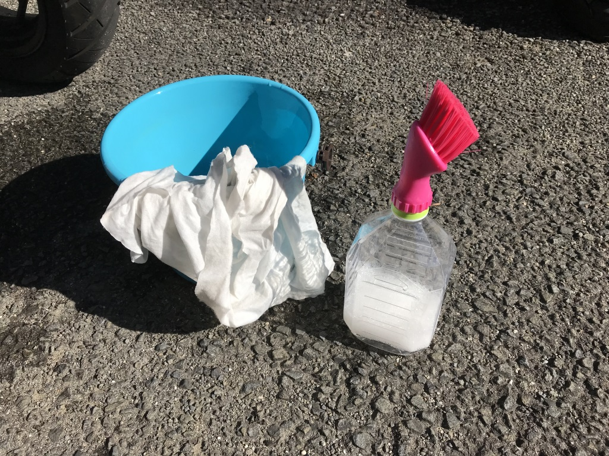

天気がよかったので、バイクを洗った
執筆日時：
— だるたにゃん (@daruyanagi) 2017年12月2日
今日は天気が良かったので、久しぶりにバイクでジムへ行ったんだが（東京に行ってたりで最近はご無沙汰してた）、バイクカバーをかけるのをさぼってたせいか、汚れがひどかった。スクリーンに鳥の糞もついてたし、さすがにこのままではかわいそうなので洗ってあげることにする。クイックルワイパーみたいなヤツで拭いたりはするけど（バイク用のな）、何気にちゃんと洗うのは買って以来、初めてかもしれぬ（← おいこら
まぁ、それはともかく。
実家の頃は水道ホースを引っ張ってじゃぶじゃぶ洗ってたんだけど、マンションだと場所がなかったりでいろいろしんどいよね。みんなどうやって洗ってるんだろうな。

うちはお察しの通り、掃除・洗濯が好きじゃないので割と適当なんだけど、小さめのバケツ×1＋雑巾×2枚（洗う用・仕上げ用）＋1リッターのペットボトル（バイクシャンプー希釈＋ブラシ付き）を用意して洗ってる。っていうか、これ＋クイックルワイパーみたいなヤツ以外にお掃除道具もってへんし……。
 SPオートバイシャンプー 250ml 12回洗える超濃縮タイプ 2001S")
ナンカイ(NANKAI) SPオートバイシャンプー 250ml 12回洗える超濃縮タイプ 2001S
- 出版社/メーカー: NANKAI(ナンカイ)
- メディア:
- この商品を含むブログを見る
このナンカイのバイクシャンプーは1カップを1リッターの水で割るといい感じ。ウチはいつも1リッターの「お～いお茶」を12本セットでアマゾンで頼んでいて、日常的に飲んでるから、1リッターのペットボトルは腐るほどある。それにシャンプー水を詰める。

- 出版社/メーカー: 小久保工業所
- メディア: ホーム&キッチン
- この商品を含むブログを見る
んで、口にはこういうブラシを付けとく。うちのは近所の100円均一で買ったちゃちいやつ。シャンプー水をブシュブシュだしながら、ゴシゴシできていい。穴が一つだと吸気ができないので、ペットボトルにちょっと穴をあけておくとよいかもしれない。
あと、このブラシはしょぼいので、これでカウルの表をゴシゴシしちゃいけない。カウルの裏とか、フェンダーとか、そういうところをゴシゴシする感じ。使い古した歯ブラシを用意しておくと、ちょっと便利だったりする。Ninja 250 のスクリーンの裏とか、手が届かん……（← そこに虫の死骸がはさまってた／(^o^)＼
シャンプー水も含めて2～3リッターぐらい用意することになるんだけど、ウチはだいたいこれで事足りてる。あとはチェーンに油指したり、まぁ、そんな感じ。
頑張ってワックス掛けたり、サビを落としたり……までは面倒なのでしない。まぁ、そんなにサビサビしたりし、別にさびてもいいかなと。
フットブレーキってゴムついてなかったっけ。シフトペダルにサビ pic.twitter.com/AxZ3DPiWr1
— だるたにゃん (@daruyanagi) 2017年12月2日
なんとなれば、サビサビポイントは次回のカスタムポイントになるのだ（ぉぃ
そういえばオイル交換してないから、年内にやっておかんとな。
追伸
おいなりさん残ってた (@ 踊るうどん 永木 in 松山市, 愛媛県) https://t.co/DoXvzJwXZd pic.twitter.com/AANFOFRtxy
— だるたにゃん (@daruyanagi) 2017年12月2日
キレイになったバイクでさっそくおうどんを食べに行きました。お稲荷さんをゲット！